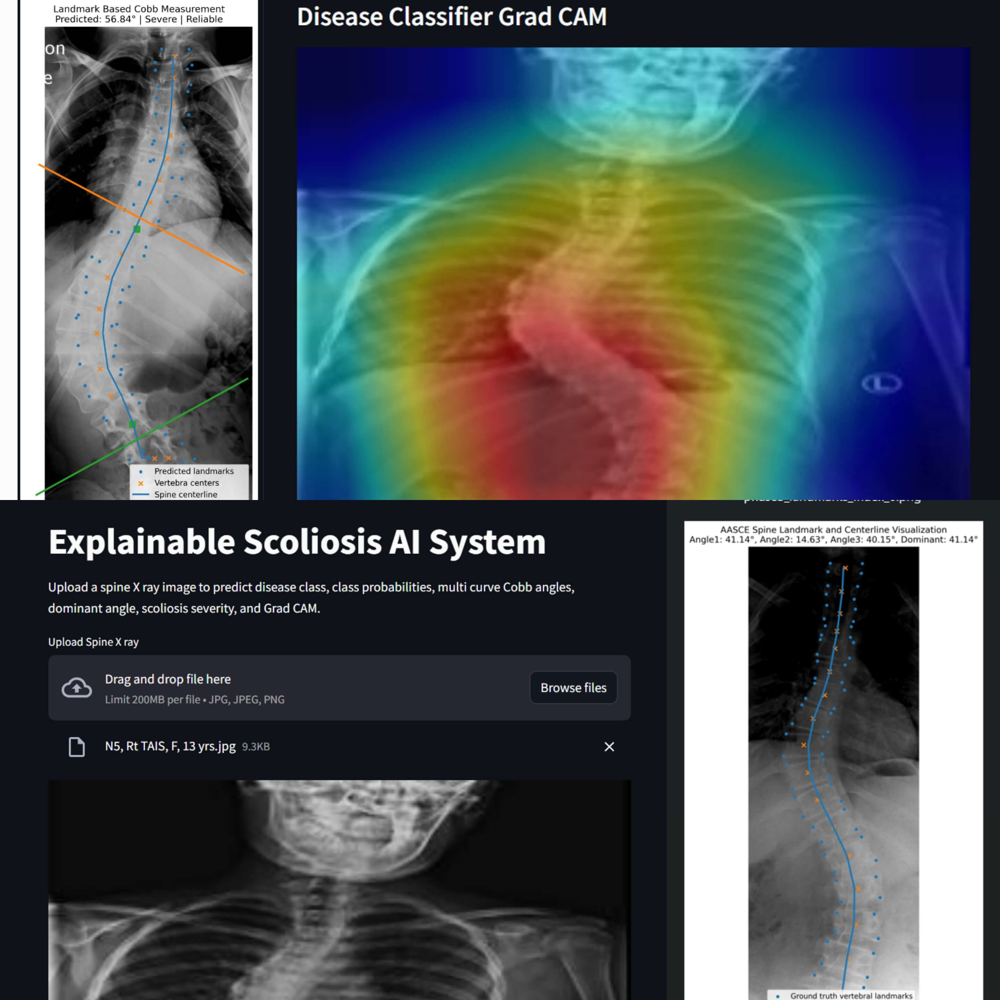

Medical AI Research
Explainable AI Framework for Automatic Scoliosis Assessment
Multi task deep learning framework for spine X ray classification, Cobb angle estimation, severity assessment, landmark detection, and Grad CAM based explanation.